Code
# Install from GitHub (when available)
# remotes::install_github("cpal/cpaltemplates")
# Load the package
library(cpaltemplates)
library(ggplot2)
library(dplyr)
# Import CPAL fonts (recommended)
import_inter_font()Comprehensive documentation and examples
This documentation provides comprehensive examples and usage guidelines for the cpaltemplates R package. The package standardizes CPAL data team workflows through templates, data visualizations, and consistent styling.
# Install from GitHub (when available)
# remotes::install_github("cpal/cpaltemplates")
# Load the package
library(cpaltemplates)
library(ggplot2)
library(dplyr)
# Import CPAL fonts (recommended)
import_inter_font()cpal_colors.R)The package provides comprehensive color palettes aligned with CPAL branding:
# View all available palettes
#view_all_palettes()
# Or view them one at a time
view_palette()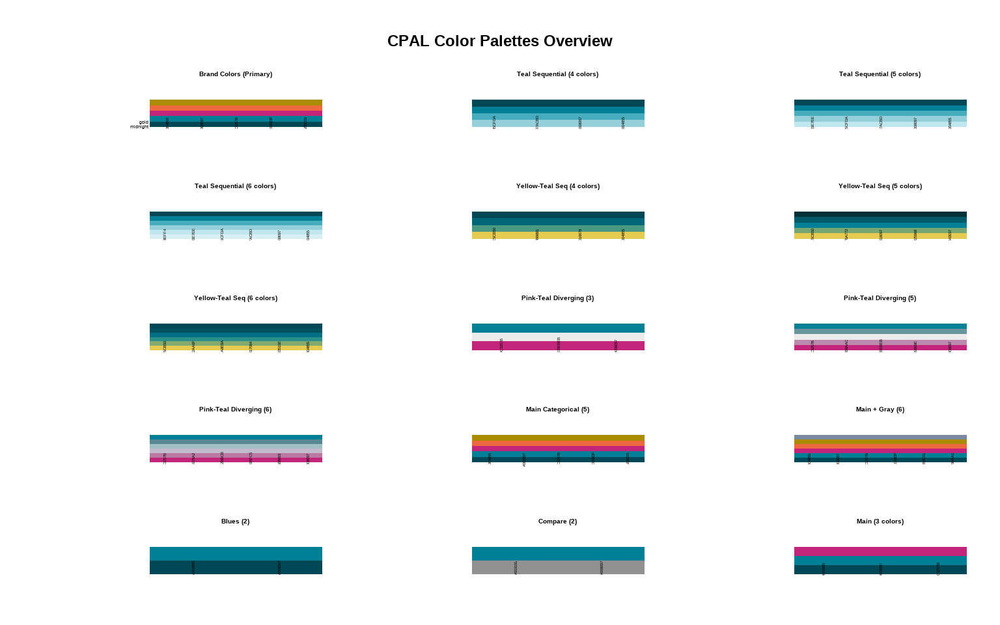
# Get primary CPAL colors
primary_colors <- cpal_colors("primary")
print(primary_colors)
#> midnight teal pink orange gold
#> "#004855" "#008097" "#C3257B" "#ED683F" "#AB8C01"
# Access specific colors by name
cpal_colors(c("teal", "orange", "midnight"))
#> teal orange midnight
#> "#008097" "#ED683F" "#004855"Perfect for continuous data visualization:
# Example with sequential data
set.seed(123)
data <- data.frame(
x = 1:100,
y = cumsum(rnorm(100))
)
ggplot(data, aes(x = x, y = y, color = y)) +
geom_line(size = 1.2) +
scale_color_cpal(palette = "teal_seq_5", discrete = FALSE) +
theme_cpal() +
labs(
title = "Sequential Color Palette Example",
subtitle = "Using CPAL teal sequential palette",
x = "Time", y = "Value"
)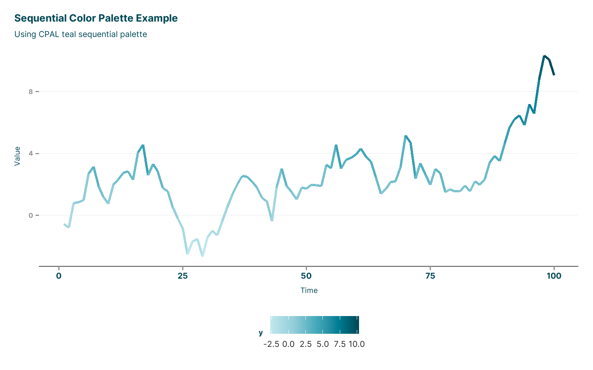
Ideal for data with meaningful midpoints:
# Create sample diverging data
div_data <- expand.grid(x = 1:10, y = 1:10) %>%
mutate(z = (x - 5.5) * (y - 5.5))
ggplot(div_data, aes(x = x, y = y, fill = z)) +
geom_tile() +
scale_fill_cpal(palette = "pink_teal_5", discrete = FALSE) +
theme_cpal() +
labs(
title = "Diverging Color Palette Example",
subtitle = "Using CPAL pink-teal diverging palette"
)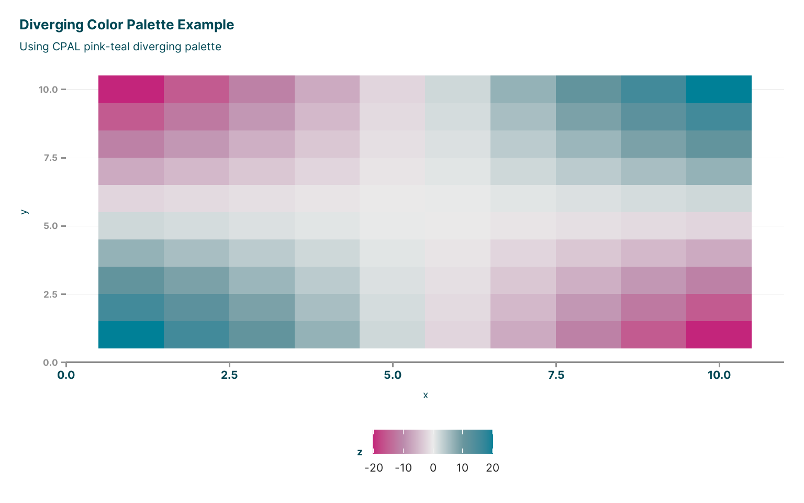
For discrete categories:
# Sample categorical data
cat_data <- mtcars %>%
mutate(
transmission = ifelse(am == 1, "Manual", "Automatic"),
engine = case_when(
cyl == 4 ~ "4-cylinder",
cyl == 6 ~ "6-cylinder",
cyl == 8 ~ "8-cylinder"
)
)
ggplot(cat_data, aes(x = wt, y = mpg, color = engine)) +
geom_point(size = 3, alpha = 0.8) +
scale_color_cpal(palette = "main_3") +
theme_cpal() +
labs(
title = "Categorical Color Palette Example",
subtitle = "Using CPAL main categorical palette",
x = "Weight (1000 lbs)", y = "Miles per Gallon",
color = "Engine Type"
)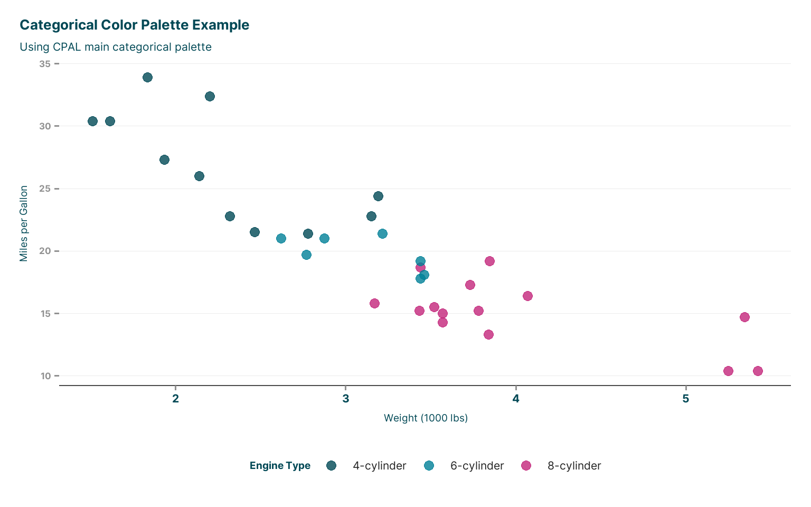
theme_cpal.R)# Basic scatter plot with CPAL theme
ggplot(mtcars, aes(x = wt, y = mpg)) +
geom_point(color = cpal_colors("teal"), size = 3, alpha = 0.7) +
theme_cpal() +
labs(
title = "Basic CPAL Theme Example",
subtitle = "Clean, professional styling for data visualization",
x = "Weight (1000 lbs)", y = "Miles per Gallon"
)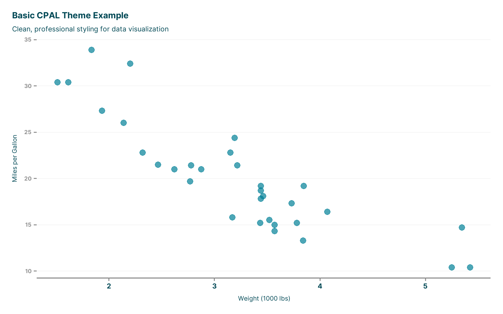
# Minimal theme
p_minimal <- ggplot(mtcars, aes(x = factor(cyl), y = mpg)) +
geom_boxplot(fill = cpal_colors("teal"), alpha = 0.7) +
theme_cpal_minimal() +
labs(title = "Minimal Theme", x = "Cylinders", y = "MPG")
# Dark theme
p_dark <- ggplot(mtcars, aes(x = factor(cyl), y = mpg)) +
geom_boxplot(fill = cpal_colors("orange"), alpha = 0.8) +
theme_cpal_dark() +
labs(title = "Dark Theme", x = "Cylinders", y = "MPG")
# Classic theme
p_classic <- ggplot(mtcars, aes(x = factor(cyl), y = mpg)) +
geom_boxplot(fill = cpal_colors("pink"), alpha = 0.7) +
theme_cpal_classic() +
labs(title = "Classic Theme", x = "Cylinders", y = "MPG")
# Display themes side by side (requires patchwork)
library(patchwork)
p_minimal + p_dark + p_classic
# Custom theme with specific options
ggplot(economics, aes(x = date, y = unemploy)) +
geom_line(color = cpal_colors("midnight"), size = 1) +
theme_cpal(
base_size = 14,
grid = "both",
axis_line = "none",
legend_position = "top"
) +
labs(
title = "Customized CPAL Theme",
subtitle = "With larger text and both grid lines",
x = "Date", y = "Unemployment (thousands)"
)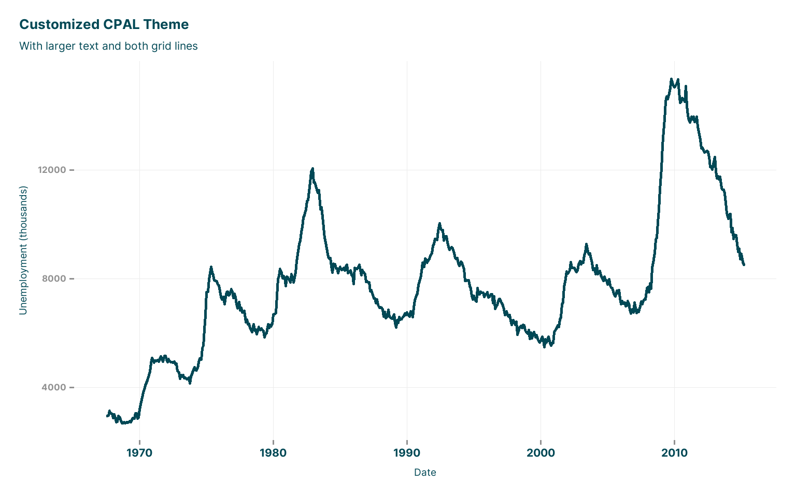
# Print theme for publications
ggplot(mtcars, aes(x = wt, y = mpg, color = factor(cyl))) +
geom_point(size = 2) +
scale_color_cpal(palette = "main_3") +
theme_cpal_print() +
labs(
title = "Print-Optimized Theme",
x = "Weight", y = "MPG", color = "Cylinders"
)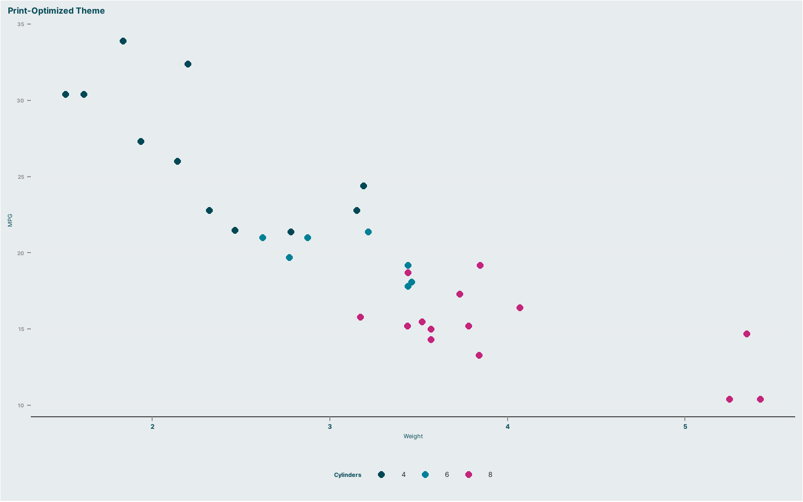
# Map theme (for spatial data)
# Note: Requires spatial data
#theme_cpal_map(scale = "continuous")# Set CPAL theme as default for all plots in session
set_theme_cpal()
# All subsequent plots will use CPAL theme
ggplot(iris, aes(x = Sepal.Length, y = Sepal.Width)) +
geom_point()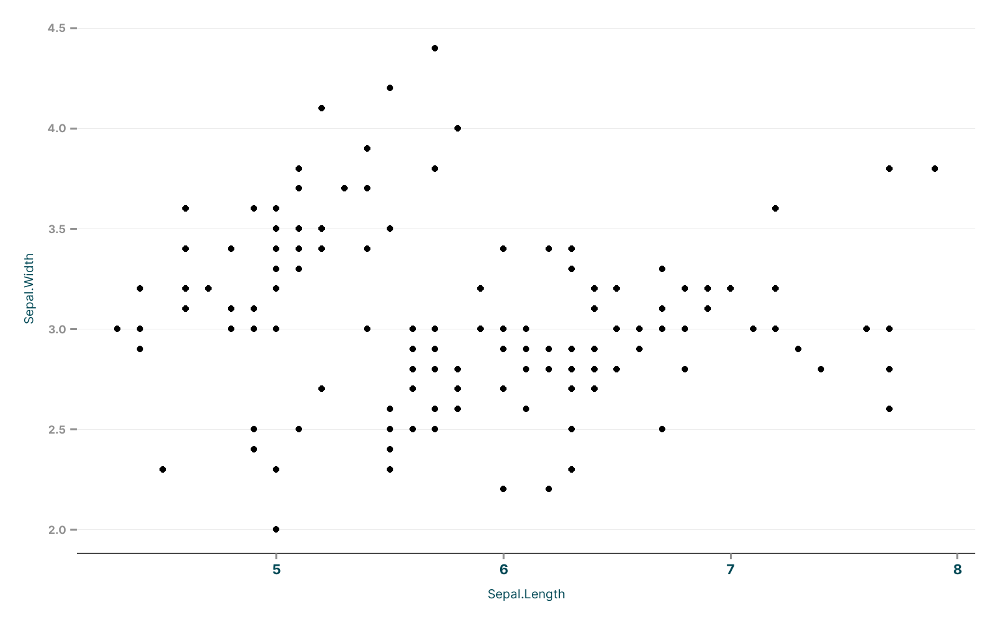
cpal_interactive.R)library(ggiraph)
# Interactive scatter plot
p_interactive <- ggplot(mtcars, aes(x = wt, y = mpg)) +
cpal_point_interactive(
aes(tooltip = paste("Car:", rownames(mtcars),
"<br>Weight:", wt,
"<br>MPG:", mpg)),
size = 3, alpha = 0.7, color = cpal_colors("teal")
) +
theme_cpal() +
labs(
title = "Interactive Scatter Plot",
subtitle = "Hover over points for details",
x = "Weight (1000 lbs)", y = "Miles per Gallon"
)
# Render interactive plot
#cpal_interactive(p_interactive)# Sample data for bar chart
bar_data <- mtcars %>%
count(cyl, name = "count") %>%
mutate(
cyl_label = paste(cyl, "cylinders"),
tooltip_text = paste("Engine:", cyl_label, "<br>Count:", count)
)
p_bar <- ggplot(bar_data, aes(x = factor(cyl), y = count)) +
cpal_col_interactive(
aes(tooltip = tooltip_text, fill = factor(cyl))
) +
scale_fill_cpal(palette = "main_3") +
theme_cpal() +
labs(
title = "Interactive Bar Chart",
x = "Cylinders", y = "Count",
fill = "Engine Type"
)
#cpal_interactive(p_bar)library(tidyverse)
library(reactable)
# Create interactive table with CPAL styling
sample_data <- mtcars %>%
rownames_to_column("car") %>%
select(car, mpg, cyl, hp, wt) %>%
head(10)
cpal_table_interactive(
sample_data,
columns = list(
mpg = colDef(name = "MPG", format = colFormat(digits = 1)),
hp = colDef(name = "Horsepower"),
wt = colDef(name = "Weight", format = colFormat(digits = 2))
)
)cpal_plots.R)# Create a plot
p <- ggplot(mtcars, aes(x = wt, y = mpg, color = factor(cyl))) +
geom_point(size = 3) +
scale_color_cpal() +
theme_cpal() +
labs(
title = "Sample Plot for Saving",
x = "Weight", y = "MPG", color = "Cylinders"
)
# Save with different size presets
#save_cpal_plot(p, "standard_plot.png", size = "default")
#save_cpal_plot(p, "slide_plot.png", size = "slide")
#save_cpal_plot(p, "small_plot.png", size = "half")
# Custom dimensions
#save_cpal_plot(p, "custom_plot.png", size = c(12, 8))library(gt)
# Create a formatted table with CPAL styling
table_data <- mtcars %>%
rownames_to_column("model") %>%
select(model, mpg, cyl, hp, wt) %>%
head(8)
cpal_table(
table_data,
title = "Sample Car Data",
subtitle = "Formatted with CPAL styling"
) %>%
gt::fmt_number(columns = c(mpg, wt), decimals = 1) %>%
gt::fmt_number(columns = hp, decimals = 0)| Sample Car Data | ||||
|---|---|---|---|---|
| Formatted with CPAL styling | ||||
| model | mpg | cyl | hp | wt |
| Mazda RX4 | 21.0 | 6 | 110 | 2.6 |
| Mazda RX4 Wag | 21.0 | 6 | 110 | 2.9 |
| Datsun 710 | 22.8 | 4 | 93 | 2.3 |
| Hornet 4 Drive | 21.4 | 6 | 110 | 3.2 |
| Hornet Sportabout | 18.7 | 8 | 175 | 3.4 |
| Valiant | 18.1 | 6 | 105 | 3.5 |
| Duster 360 | 14.3 | 8 | 245 | 3.6 |
| Merc 240D | 24.4 | 4 | 62 | 3.2 |
# Check accessibility of a plot
p_check <- ggplot(iris, aes(x = Sepal.Length, y = Sepal.Width, color = Species)) +
geom_point(size = 2) +
scale_color_cpal() +
theme_cpal()
# Run accessibility check
check_plot_accessibility(p_check, verbose = TRUE)
#> === CPAL Plot Accessibility Check ===
#>
#> Text Size:
#> Base size: 11 pt
#> Status: OK PASS
#> Text size is adequate
#>
#> Color Accessibility:
#> Using CPAL palette: OK Yes
#> Using CPAL palette
#>
#> Recommendations:
#> - Add descriptive titles and captions
#> - Consider using shapes/patterns in addition to colors
#> - Test with colorblindness simulators
#> - Provide alternative text descriptions for web/document useThe add_cpal_logo() function now intelligently adds the appropriate CPAL icon to your plots:
# Create sample plots
p_light <- ggplot(mtcars, aes(x = wt, y = mpg)) +
geom_point(color = cpal_colors("teal"), size = 3) +
theme_cpal() +
labs(
title = "Light Theme with Logo",
subtitle = "Teal icon automatically selected",
x = "Weight (1000 lbs)", y = "Miles per Gallon"
)
p_dark <- ggplot(mtcars, aes(x = wt, y = mpg)) +
geom_point(color = cpal_colors("orange"), size = 3) +
theme_cpal_dark() +
labs(
title = "Dark Theme with Logo",
subtitle = "White icon automatically selected",
x = "Weight (1000 lbs)", y = "Miles per Gallon"
)
# Add logos (automatically detects theme and chooses appropriate icon)
p_light_logo <- add_cpal_logo(p_light) # Uses CPAL_Icon_Teal.png, top-right
p_dark_logo <- add_cpal_logo(p_dark) # Uses CPAL_Icon_White.png, top-right
# Custom positioning
p_custom <- add_cpal_logo(p_light, position = "bottom-left", size = 0.1)
# Display plots
print(p_light_logo)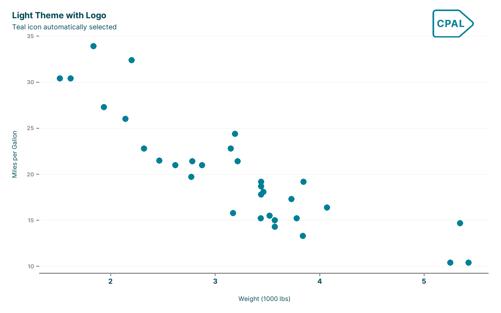
print(p_dark_logo)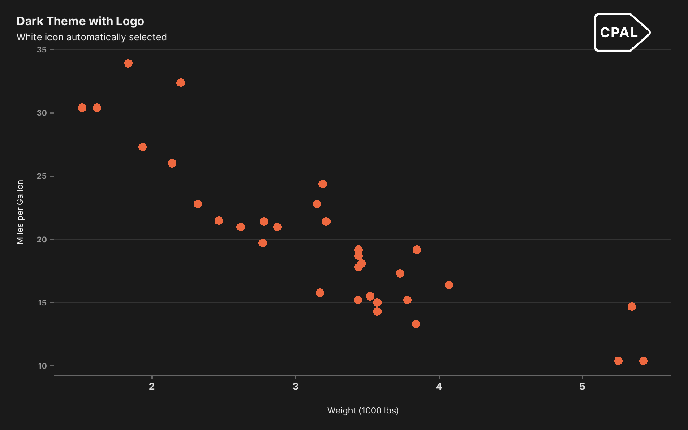
print(p_custom)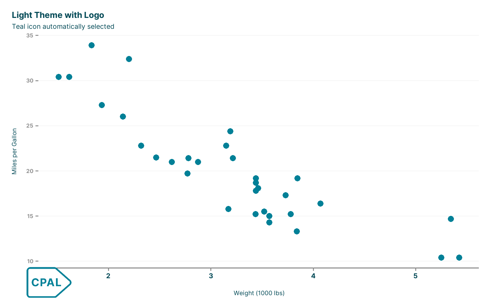
Logo Features: - Smart theme detection: Automatically uses teal icon for light themes, white icon for dark themes - Default position: Top-right corner - Customizable: Position ("top-right", "top-left", "bottom-right", "bottom-left") and size - Brand consistent: Uses official CPAL icon assets
start_project.R)# Interactive project creation (will prompt for options)
#start_project()
# Create specific project types programmatically
#start_project(
# name = "my_analysis_project",
# path = "~/projects",
# project_type = "analysis",
# features = c("renv", "git", "targets"),
# interactive = FALSE
#)
# Create a Quarto report project
#start_project(
# name = "quarterly_report",
# project_type = "quarto-report",
# features = c("renv", "git"),
# interactive = FALSE
#)
# ✨ NEW: Create a Quarto website
#start_project(
# name = "cpal_website",
# project_type = "quarto-web",
# features = c("renv", "git"),
# interactive = FALSE
#)
# Create a Shiny dashboard
#start_project(
# name = "data_dashboard",
# project_type = "shiny-dashboard",
# features = c("renv", "git", "tests"),
# interactive = FALSE
#)utils.R)# Add Quarto reporting capability to existing project
#use_quarto_report(path = ".", overwrite = FALSE)
# This creates:
# - _quarto.yml configuration
# - report.qmd template
# - assets/css/cpal-style.css
# - R/functions.R with helpers# Add presentation slides
#use_quarto_slides(
# path = ".",
# filename = "presentation.qmd",
# overwrite = FALSE
#)# Add website capability to existing project
#use_quarto_web(path = ".", overwrite = FALSE)
# This creates:
# - _quarto.yml website configuration
# - index.qmd homepage
# - assets/css/cpal-style.css
# - All CPAL brand assets (logos, icons, favicons)
# - docs/ output directory# Add full dashboard
#use_shiny_dashboard(path = ".", overwrite = FALSE)
# Or add simple app
#use_shiny_app(path = ".", overwrite = FALSE)# Add professional CPAL theme to Shiny projects
#use_shiny_theme(path = ".", overwrite = FALSE)
# This creates:
# - www/cpal-theme.css (custom CPAL styling)
# - app_enhanced.R (example with theme integration)
# - All CPAL brand assets in www/# Add targets workflow
#use_targets(
# path = ".",
# type = "analysis", # or "basic", "report"
# overwrite = FALSE
#)# Update CSS and images to latest versions
#update_cpal_assets(path = ".", components = "all")
# Update only specific components
#update_cpal_assets(path = ".", components = c("css"))library(cpaltemplates)
library(ggplot2)
library(dplyr)
# Set up environment
import_inter_font()
set_theme_cpal()
# Create sample analysis
analysis_data <- economics %>%
filter(date >= as.Date("2000-01-01")) %>%
mutate(
year = lubridate::year(date),
unemployment_rate = unemploy / pop * 100
)
# Main visualization with logo
p1 <- ggplot(analysis_data, aes(x = date, y = unemployment_rate)) +
geom_line(color = cpal_colors("teal"), size = 1.2) +
geom_smooth(
method = "loess",
color = cpal_colors("orange"),
fill = cpal_colors("orange"),
alpha = 0.2
) +
scale_y_continuous(labels = scales::percent_format(scale = 1)) +
labs(
title = "U.S. Unemployment Rate Trends",
subtitle = "2000-2015, with smoothed trend line",
x = "Year",
y = "Unemployment Rate (%)",
caption = "Source: FRED Economic Data"
)
# Add CPAL logo
p1_final <- add_cpal_logo(p1)
# Supporting visualization
p2 <- analysis_data %>%
mutate(decade = ifelse(year < 2010, "2000s", "2010s")) %>%
ggplot(aes(x = decade, y = unemployment_rate, fill = decade)) +
geom_boxplot(alpha = 0.7) +
scale_fill_cpal(palette = "compare") +
labs(
title = "Unemployment by Decade",
x = "Decade", y = "Unemployment Rate (%)",
fill = "Decade"
)
# Add logo to supporting plot
p2_final <- add_cpal_logo(p2, position = "bottom-right", size = 0.06)
# Save publication-ready versions
save_cpal_plot(p1_final, "unemployment_trend.png", size = "default")
save_cpal_plot(p2_final, "unemployment_comparison.png", size = "half")
# Check accessibility
check_plot_accessibility(p1_final)
#> === CPAL Plot Accessibility Check ===
#>
#> Text Size:
#> Base size: 14 pt
#> Status: OK PASS
#> Text size is adequate
#>
#> Color Accessibility:
#> Using CPAL palette: NO No
#> Consider using CPAL color palettes which are colorblind-safe
#>
#> Recommendations:
#> - Add descriptive titles and captions
#> - Consider using shapes/patterns in addition to colors
#> - Test with colorblindness simulators
#> - Provide alternative text descriptions for web/document use# Interactive version with hover details
library(ggiraph)
p_interactive <- ggplot(analysis_data, aes(x = date, y = unemployment_rate)) +
cpal_line_interactive(
aes(tooltip = paste("Date:", format(date, "%Y-%m"),
"<br>Rate:", round(unemployment_rate, 1), "%")),
color = cpal_colors("teal"), size = 1.2
) +
scale_y_continuous(labels = scales::percent_format(scale = 1)) +
labs(
title = "Interactive U.S. Unemployment Rate",
subtitle = "Hover over line for details",
x = "Year", y = "Unemployment Rate (%)"
)
# Add logo and make interactive
p_interactive_final <- add_cpal_logo(p_interactive)
#cpal_interactive(p_interactive_final, width_svg = 10, height_svg = 6)import_inter_font() when starting analysisset_theme_cpal() to establish consistent stylingcheck_plot_accessibility()save_cpal_plot()add_cpal_logo() for professional outputsThis documentation covers the current state of the cpaltemplates package with all new features. For the most up-to-date information, check the package README and function documentation.